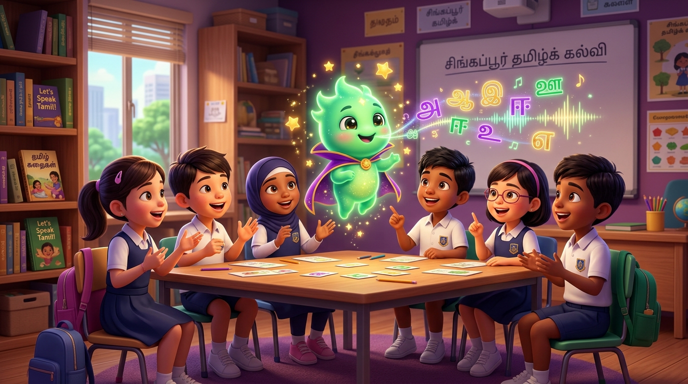
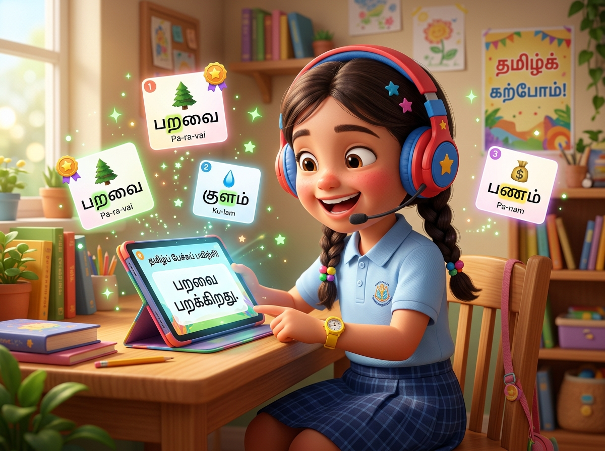
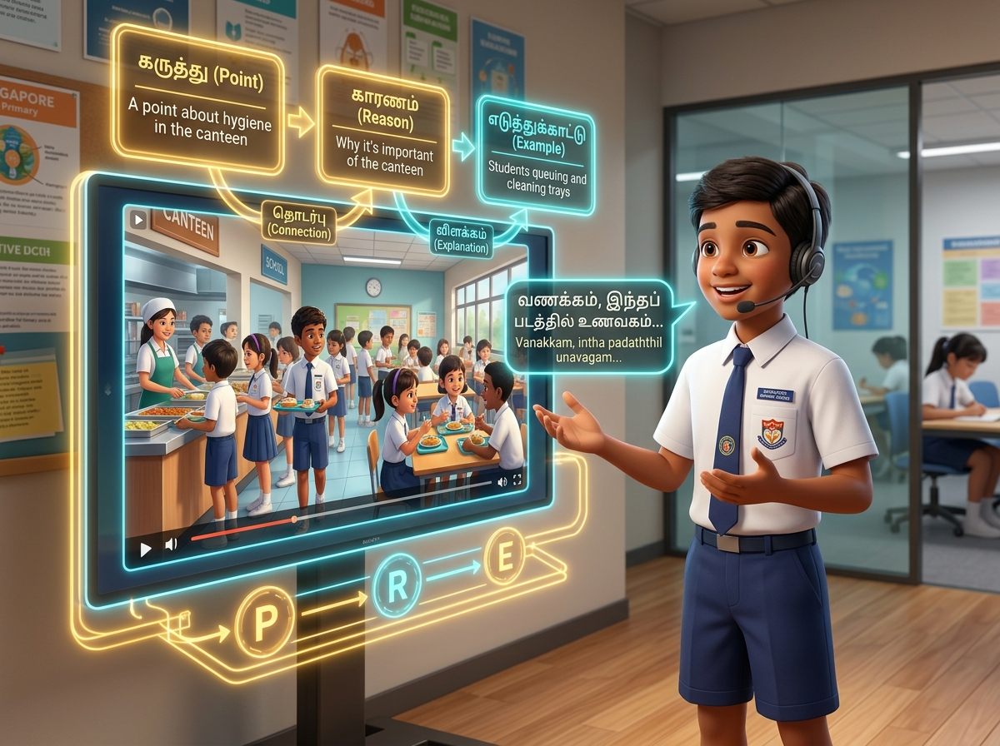

🇸🇬 Singapore MOE Syllabus Aligned
🛡️ 100% Student PDPA Compliant
Empowering Young Minds to Speak Tamil with Fluency & Confidence.
Singapore's first AI-powered Tamil oral coach. Built with an 8-step reading aloud engine for Primary 3 and video-stimulus dilemma conversation scaffolding for Primary 6 PSLE.
98%
Pronunciation Growth
15,000+
Oral Minutes Logged
10x
Teacher Assessment Speed

🎯
MOE P3 & P6 Aligned
Singapore Primary Benchmark
🎙️
Sub-Word AI Speech Engine
Instant Phonetic Feedback
Interactive Experience
Experience Mayaavi's AI Engine Live
Test how Mayaavi transforms Tamil oral learning in real time for both foundational readers and PSLE exam candidates.
Live AI Speech Engine Simulator
பயிற்சி 1: குடும்பத்துடன் பூங்காவில்
Set 1: At the Park with Family • Click any word for phonetic guide
ஞாயிற்றுக்கிழமை
காலை,
கவின்
தனது
குடும்பத்துடன்
பூங்காவிற்குச்
சென்றான்.
வானம் தெளிவாக இருந்தது.
நடைப்பயிற்சி
சுத்தம்
பொறுப்பு.
AI Speech Assessment
Attempt 2 vs Attempt 1 Progress
94%
💡 Word Spotlight: Click on words like "ஞாயிற்றுக்கிழமை" or "பொறுப்பு" above to explore tricky retroflex sounds (ற / ள) and vocabulary meanings.
P6 PREP Structured Conversation
Click steps & connector chips to construct high-scoring PSLE oral reasoning:
[கருத்து / Point]: பள்ளி உணவகத்தில் மாணவர்கள் வரிசையில் நின்று உணவு வாங்குகிறார்கள்.
Students are queuing up politely at the school canteen stalls to buy food.
Insert Connector Chips:
MOE Syllabus Architecture
Tailored for Key Primary Milestones
Mayaavi addresses the unique oral communication challenges at both foundational and high-stakes primary school stages.
Primary 3 Foundation
Explore P3 8-Step Ladder →
Reading Aloud & Sound Mastery
Bridging phonetic hesitation into confident, expressive Tamil reading through our guided 8-step scaffolding ladder.

- ✓ Tricky Sound Distinction: Targeted drills on ற/ர, ள/ல/ழ, ண/ந/ன.
- ✓ High-Stakes Word Cards: 4-step chunked decoding for multisyllabic words.
- ✓ Dual-Attempt Tracking: Celebrates improvement between Attempt 1 & 2.
- ✓ Speaking Seed Prompts: Encourages early conversational expression.
Primary 6 PSLE Exam
Explore P6 PSLE Framework →
Video Stimulus & Ethical Dilemmas
Equipping graduating students with structured analytical frameworks to articulate deep reasoning in PSLE E-Oral exams.

- ✓ Shot-by-Shot Video Analysis: Timestamp-based active scene recall.
- ✓ PREP Reasoning Framework: Point, Reason, Example, and Consequence.
- ✓ Real-World Dilemma Scenarios: Moral courage, honesty, and empathy.
- ✓ Instant MOE Rubric Scoring: Direct readiness mapping for national exams.
Pedagogical Framework
The 8-Step P3 Mastery Ladder
Every Tamil reading set in Mayaavi guides the student through a proven cognitive progression from passive listening to autonomous speech.
1
Listen & Absorb 🎧
Native Tamil voice model establishes pristine rhythm, pitch, and pronunciation.
2
Follow Words 📖
Visual highlighting follows audio playback to build text-to-speech cognitive links.
3
Sentence Practice 💬
Sentence-by-sentence repetitions allow students to conquer challenging breath pauses.
4
Word Challenge 🃏
Interactive flashcards drill high-frequency vocabulary and tricky consonant pairs.
5
Expression Tone 🎭
Emphasizes emotion, punctuation pauses, and story character voices.
6
First Attempt 🎙️
Student records complete passage. AI evaluates baseline accuracy and fluency.
7
AI Feedback & Retry 🔄
Instant positive reinforcement highlights growth on second recorded attempt.
8
Speaking Seed 🌱
Open-ended reflective prompt connecting passage themes to personal real-life habits.
PSLE Exam Excellence
The PREP Framework for Conversational Tamil
Singapore MOE PSLE Tamil oral tests demand structured elaboration, mature vocabulary, and contextual opinions. Mayaavi conditions students to construct coherent arguments naturally.
P
Point (கருத்து) Direct Observation
State a clear, direct stance regarding what was observed in the video stimulus.
காணொளியில்...
என் கருத்துப்படி...
R
Reason (காரணம்) Logical Why
Explain the underlying reasoning, civic values, or emotional drivers.
ஏனென்றால்...
இதனால்...
E
Example (எடுத்துக்காட்டு) Personal Evidence
Connect personal experiences, school incidents, or community observations.
உதாரணமாக...
என் பள்ளியில்...
⚖️
Real-World Moral Dilemma Scenarios
Mayaavi challenges P6 candidates with situational dilemmas requiring ethical reasoning:
Scenario A: நேர்மை (Honesty at School)
Finding $50 cash near the canteen drinks counter when nobody is looking. What should you do and why?
Scenario B: நட்பு & பொறுப்பு (Friendship & Duty)
Your best friend is playing games during online revision class. How do you advise them politely?
Scenario C: சமூகப் பொறுப்புணர்வு (Civic Responsibility)
Encouraging elderly commuters to take reserved seating on public transport.
For Educators & TL HODs
Empowering Teachers with Diagnostic Precision
Evaluating 40 students individually for oral practice used to take 8+ hours of classroom time. Mayaavi automates the preliminary phonetic analysis, giving teachers instant diagnostic clarity.
📊
Cohort-Wide Oral Matrix
Instantly identify which students are struggling with specific consonant blends or sentence rhythm.
⚡
1-Click Remedial Assignment
Assign targeted micro-practice packs for specific phonetic challenges directly to individual student dashboards.
💬
Personalized Voice Praise & Notes
Send personalized audio encouragement to motivate hesitant speakers with genuine teacher warmth.
Measurable Advantage
Traditional Practice vs Mayaavi AI Scaffolding
See why leading Singapore educators and parents are choosing Mayaavi for Tamil oral excellence.
| Learning Dimension | Traditional Worksheet & Tuition | Mayaavi AI Platform ✨ |
|---|---|---|
| Practice Frequency | Once a week (10-15 minutes max) | Unlimited daily on-demand oral practice (24/7) |
| Pronunciation Feedback | Delayed manual corrections or missed nuances | Sub-second phonetic precision on ற/ர, ள/ல/ழ |
| P6 Video Stimulus Prep | Static textbook photos, unguided responses | Multi-scene video timelines with PREP connectors |
| Progress Tracking | Subjective teacher impression | Quantitative audio archives & dual-attempt metrics |
| Student Anxiety | High hesitation when speaking in front of peers | Safe, private, gamified AI mentor that builds self-belief |
Trusted by Educators
What Singapore Tamil Teachers & Parents Say
Real feedback from teachers, tuition specialists, and parents preparing children for Primary Tamil exams.
"Mayaavi has solved our biggest classroom dilemma: how to give 38 students individual speaking practice without losing hours of syllabus time. The P3 phonetic breakdown is extraordinary."
"My son was terrified of the PSLE Tamil Oral video stimulus. The PREP framework and dilemma scenarios gave him structured thinking. He achieved AL1 in his school prelims!"
"The ability for teachers to see which specific consonants (like ள vs ல) a student struggles with in real time has completely transformed our remedial planning."
Got Questions?
Frequently Asked Questions
Everything you need to know about implementing Mayaavi in your school or home.
Yes. Mayaavi was built from the ground up by Singapore Tamil curriculum specialists following MOE Primary Tamil Oral Examination rubrics for both Primary 3 reading aloud and Primary 6 PSLE Video-Stimulus E-Oral formats.
We take child privacy with utmost seriousness. Student audio recordings are processed securely for real-time pedagogical assessment only and are never used to train external models. Mayaavi adheres to Singapore Personal Data Protection Act (PDPA) and school IT security guidelines.
Mayaavi runs smoothly in any modern web browser (Google Chrome, Apple Safari, Microsoft Edge) across iPads, School Chromebooks, Mac, and Windows PCs. No complicated app installations are required.
Yes! We offer 4-week complimentary school pilots for Primary Mother Tongue Language departments. Our team provides dedicated onboarding, teacher workshops, and custom cohort analytics.
Start Your School Journey
Ready to Ignite Your Students' Passion for Tamil Oral?
Join forward-thinking Singapore educators transforming Tamil language fluency with Mayaavi's magical AI mentor.